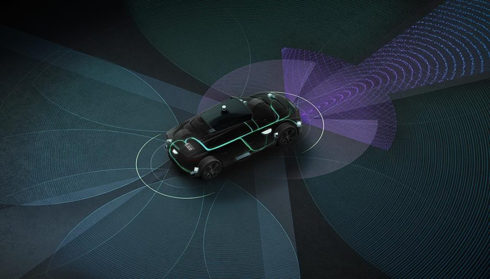

Building Hardware.
Solving Problems.
I design, build, and test hardware systems across PCB design, FPGA development, embedded electronics, robotics, and autonomous-driving research.
Featured Projects
Projects selected to show how I move from an engineering problem to a tested physical result.

Stereo Audio Amplifier PCB
LTspice simulation, KiCad schematic and layout, through-hole assembly, and bench testing.

FPGA Arithmetic Logic Unit
A four-bit Verilog ALU verified in simulation and deployed to a Xilinx Basys 3 FPGA.

UC Merced Mi³ Lab
RoboRacer readiness, doPlan annotations, and a fused bench power harness for DRIVE AGX Thor.
Automated Plant Monitoring System
Arduino prototype with humidity sensing, timed watering, real-time clock functionality, CAD, and 3D printing. Original project artifacts are no longer available.
What I’m Building Next
FPGA-Based Computer
Long-term personal project in architecture planning: custom processor, memory system, peripherals, firmware, and eventual PCB integration.
Custom Game Console
Senior design project focused on building a microcontroller-based game console with custom hardware, embedded C++ software, and local multiplayer capabilities.
Power Electronics & RF
Upcoming technical work that will expand my analog, power-conversion, and high-frequency design experience.
Hardware has always been the part of engineering I enjoy most.
I built my first desktop computer when I was twelve and have continued upgrading, diagnosing, and working with hardware ever since. That interest developed into industrial robotics, embedded systems, electronics, PCB design, digital logic, FPGA development, and autonomous-driving research.
I am pursuing a B.S. in Computer Engineering at San Jose State University and hold associate degrees in Computer Science and Physics from Bakersfield College.
Engineering Timeline
Robotics engineering program, Universal Robots certification, and KUKA experience.
Arduino, sensor integration, CAD modeling, and 3D printing.
Analog electronics, PCB design, Verilog, FPGA development, and microprocessors.
Autonomous-driving research, RoboRacer, doPlan, and NVIDIA DRIVE AGX Thor.
Custom game console, embedded systems, custom PCB design, and power electronics.